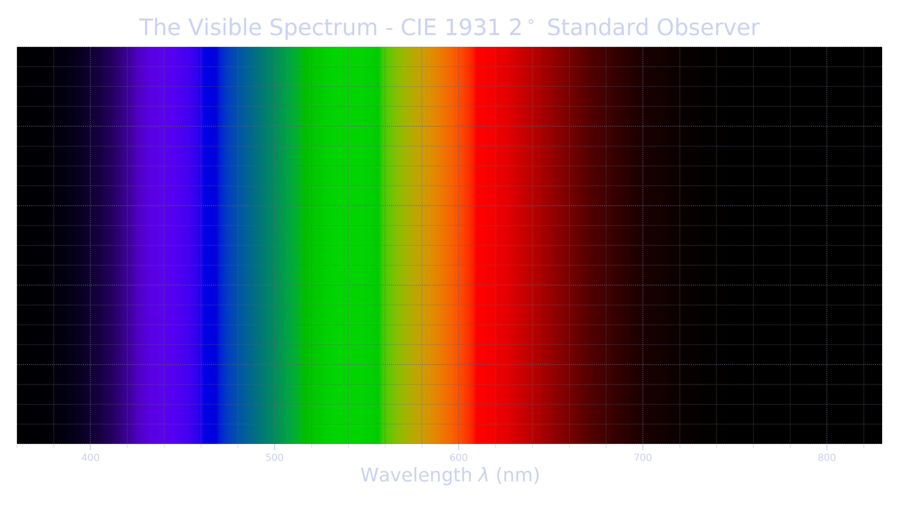
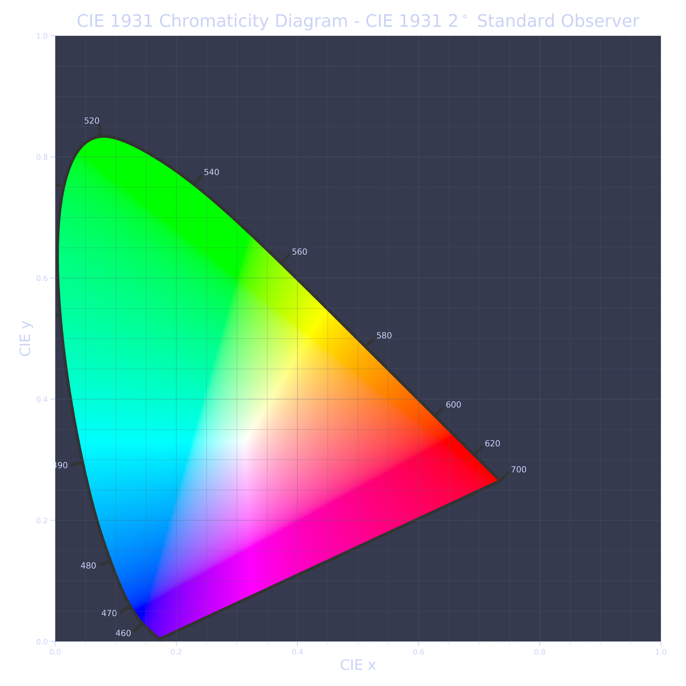
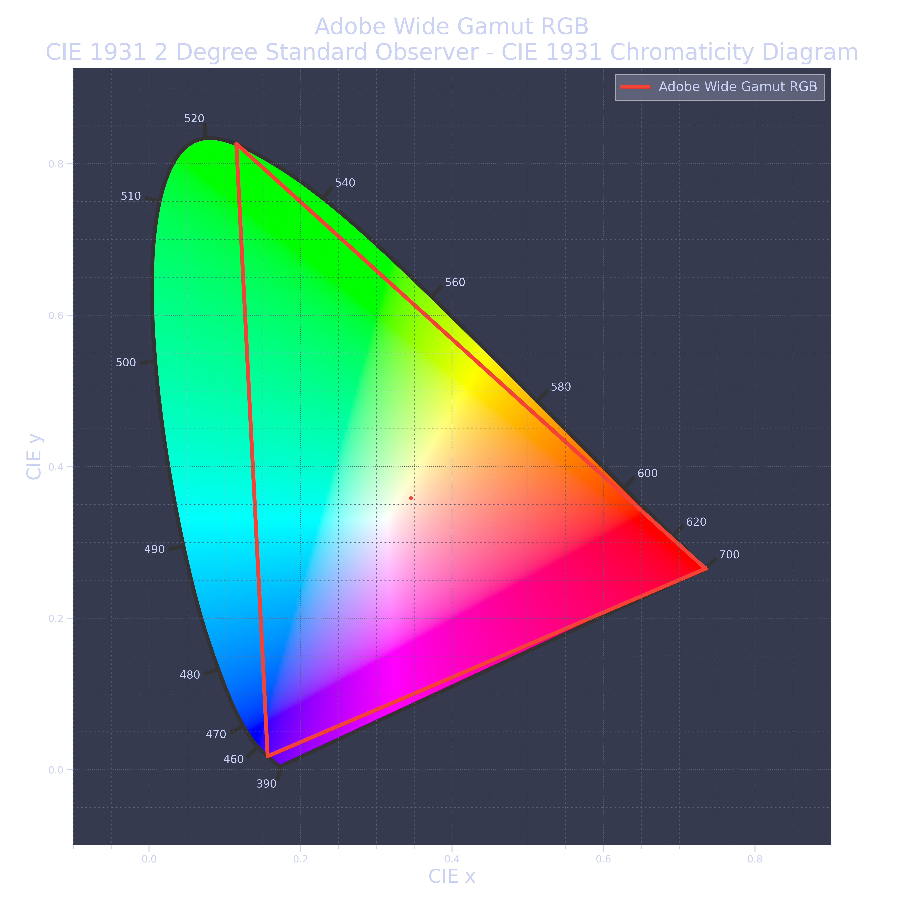
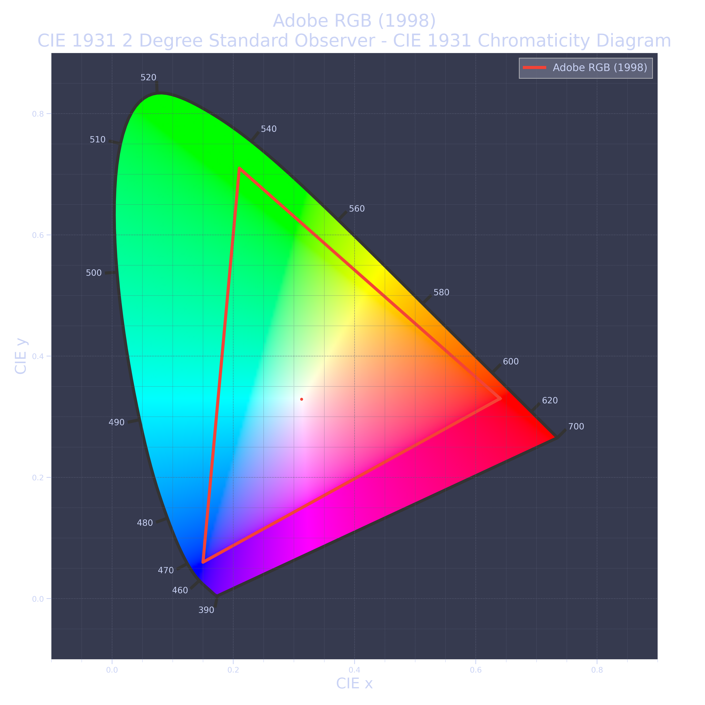
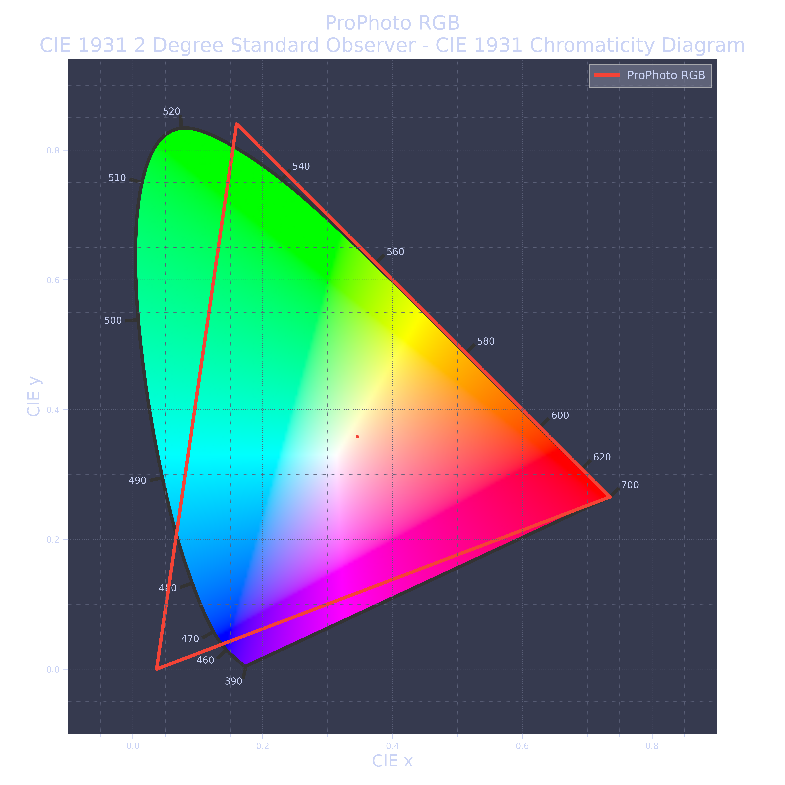
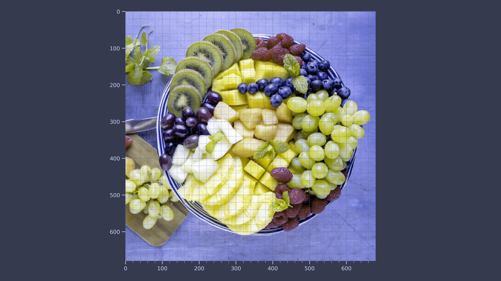
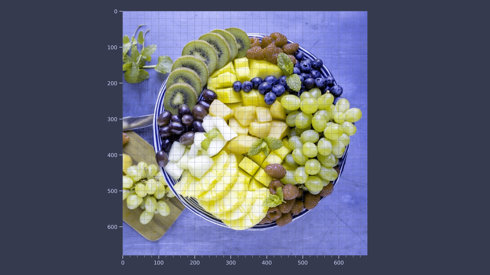
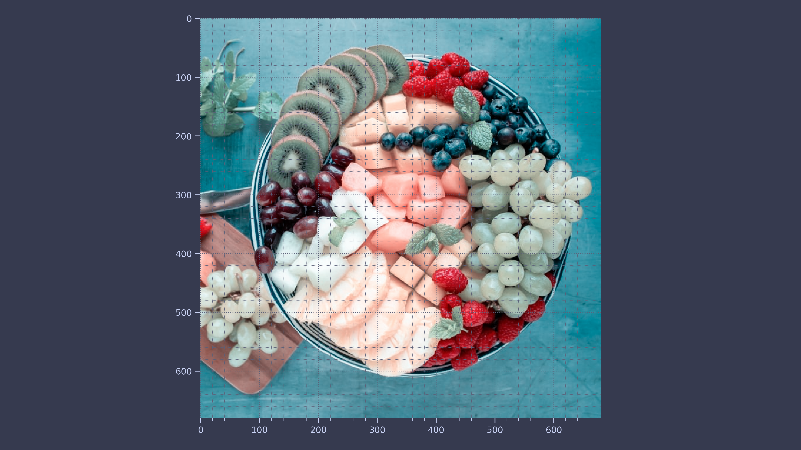

Code for Digital Image Processing Perception
Table of Contents
These are the code snippets used in Perception part of Digital Image Processing.
Introduction
Below is the required packages for the figure saving/styles to work.
import ChalcedonPy as cp # custom-pakcage for lecture materials and publications SAVE_PATH = "Perception" # sets the default save path style="web" # sets the default rcParams stylce sheet
Visible Colour
Let's start simple and observe the visible spectrum according to the CIE 1931 2 standard [1]. For more information on the standard, please click here.
from colour.plotting import * import matplotlib.pyplot as plt # To allow saving the plot plot_visible_spectrum(show=False) cp.store_fig("visible-colour", filepath = SAVE_PATH, style = style, close = True)

Colour Gamut Standards
Below is the plotting of the color gamut of visible to the human eye.
from colour.plotting import plot_chromaticity_diagram_CIE1931 import colour colour.plotting.plot_chromaticity_diagram_CIE1931(show=False) cp.store_fig("cie-1931", filepath = SAVE_PATH, style = style, close = True)

Below is the plotting of the sRGB gamut of the standard [2]. For more information on the standard please click here.
from colour.plotting import plot_chromaticity_diagram_CIE1931 import colour colour.plotting.plot_RGB_colourspaces_in_chromaticity_diagram_CIE1931( ["sRGB"], show=False) cp.store_fig("cie-1931-sRGB", filepath = SAVE_PATH, style = style, close = True)

Below is the plotting of the Adobe RGB (1998) gamut of the standard.
from colour.plotting import plot_chromaticity_diagram_CIE1931 import colour colour.plotting.plot_RGB_colourspaces_in_chromaticity_diagram_CIE1931( ["Adobe RGB (1998)"], show=False) cp.store_fig("cie-1931-adobe-RGB", filepath = SAVE_PATH, style = style, close = True)

Below is the plotting of the Adobe Wide Gamut RGB of the standard.
from colour.plotting import plot_chromaticity_diagram_CIE1931 import colour colour.plotting.plot_RGB_colourspaces_in_chromaticity_diagram_CIE1931( ["Adobe Wide Gamut RGB"], show=False) cp.store_fig("cie-1931-adobe-wide-gamut", filepath = SAVE_PATH, style = style, close = True)
Below is the plotting of the proPhoto of the standard.
from colour.plotting import plot_chromaticity_diagram_CIE1931 import colour colour.plotting.plot_RGB_colourspaces_in_chromaticity_diagram_CIE1931( ["ProPhoto RGB"], show=False) cp.store_fig("cie-1931-pro-photo", filepath = SAVE_PATH, style = style, close = True)

Simulating Colour Blindness
The following code snippet simulates the behaviour of deuteranomaly [3].
from daltonlens import convert, simulate, generate import PIL import numpy as np # Generate a test image that spans the RGB range im = np.asarray(PIL.Image.open("Sample-Images/Fruit.jpg").convert('RGB')) # Create a simulator using the Viénot 1999 algorithm. simulator = simulate.Simulator_Vienot1999() # Apply to get a simulation of deuteranomaly deutan_im = simulator.simulate_cvd (im, simulate.Deficiency.DEUTAN, severity=0.8) plt.imshow(deutan_im) cp.store_fig("im-deuteranomaly", filepath = SAVE_PATH, style = style, close = True)

The following code snippet simulates the behaviour of protanomaly [3].
daltonlens is a package designed to simulate the effects on colour blindess. For the source code plase have a look at here.
from daltonlens import convert, simulate, generate import PIL import numpy as np # Generate a test image that spans the RGB range im = np.asarray(PIL.Image.open("Sample-Images/Fruit.jpg").convert('RGB')) # Create a simulator using the Viénot 1999 algorithm. simulator = simulate.Simulator_Vienot1999() # Apply to get a simulation of deuteranomaly protan_im = simulator.simulate_cvd (im, simulate.Deficiency.PROTAN, severity=0.8) plt.imshow(protan_im) cp.store_fig("im-protanomaly", filepath = SAVE_PATH, style = style, close = True)

The following code snippet simulates the behaviour of tritanomaly [3], [4]
from daltonlens import convert, simulate, generate import PIL import numpy as np # Generate a test image that spans the RGB range im = np.asarray(PIL.Image.open("Sample-Images/Fruit.jpg").convert('RGB')) # Create a simulator using the Viénot 1999 algorithm. simulator = simulate.Simulator_Vienot1999() # Apply to get a simulation of deuteranomaly tritan_im = simulator.simulate_cvd (im, simulate.Deficiency.TRITAN, severity=0.8) plt.imshow(tritan_im) cp.store_fig("im-tritanomaly", filepath = SAVE_PATH, style = style, close = True)

Colour Models
from PIL import Image im = Image.fromarray(, mode="CMYK") im.save("your_file.jpeg")